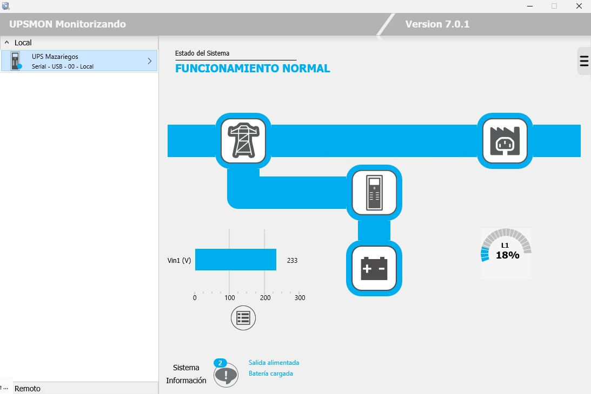
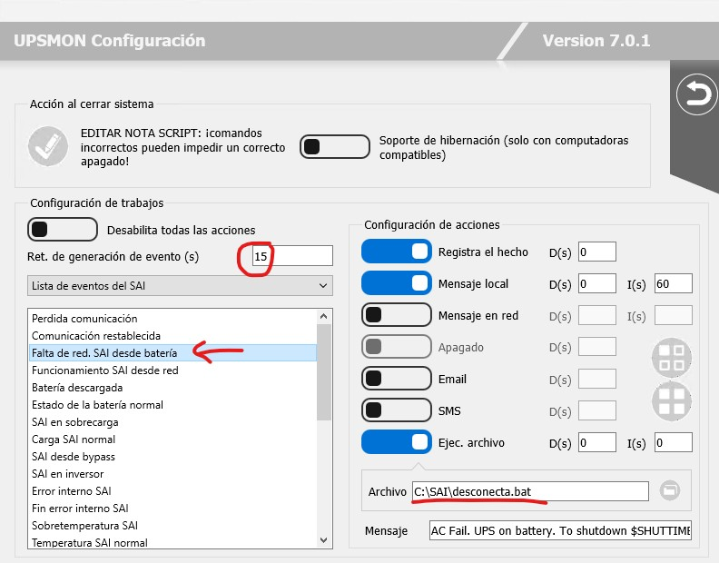

|
Comunicación de SAI con N.I.N.A. |
||
|
|
Documentación |
|
Es más que probable que dispongáis de un SAI (Sistema de Alimentación Ininterrumpida) en vuestro observatorio. Más si éste lo operáis de manera remota, en cuyo caso es un componente indispensable y crítico.
Si utilizas NINA es probable que te hayas planteado el problema de cómo informarle que estamos sufriendo un corte de suministro eléctrico y que debe proceder a parar lo que estuviese haciendo, aparcar la montura y cerrar el observatorio. Si sigues leyendo verás que es un problema de muy fácil solución.
Aunque es factible que el SAI no se gestione desde el mismo PC que lleva el observatorio, en el ejemplo parto de la base que NINA y el programa de control del SAI corren en el mismo ordenador.
Por una parte, necesitamos que nuestro SAI permita programar la ejecución de sripts cuando se producen determinados eventos. En concreto cuando falta el suministro eléctrico. En mi caso, el SAI está monitorizado por Upsmon, que permite realizar este tipo de operaciones:

Configuraremos Upsmon para que transcurridos 15" (por ejemplo) desde el corte del suministro ejecute el siguiente script, que he denominado desconecta.bat:
@echo off
> alerta.txt (
echo %DATE% %TIME%
curl --request GET http://localhost:1888/v2/api/sequence/stop && echo
curl --request GET http://localhost:1888/v2/api/equipment/guider/stop && echo
curl --request GET http://localhost:1888/v2/api/equipment/mount/park && echo
curl --request GET http://localhost:1888/v2/api/equipment/dome/close && echo
curl --request GET http://localhost:1888/v2/api/equipment/camera/warm?minutes=5
&& echo
)
Este script le indica a NINA que debe:
generando un fichero de log, en el mismo directorio donde está el script, que se denomina alerta.txt

En NINA deberemos instalar el plugin Advanced API, que permite interactuar con NINA mediante protocolo HTTP.
Para poder enviar los comandos al plugin mediante comandos HTTP utilizaremos el programa curl, que ya viene incorporado en las últimas versiones de Windows (por últimas me refiero básicamente a Windows 11), aunque me he encontrado con instalaciones que no lo tenían, en cuyo caso lo puedes descargar de aquí. Sólo es necesario descomprimir el fichero descargado y copiar el contenido de la carpeta bin donde consideremos. Por ejemplo: "C:\curl". En el script desconecta.bat podremos indicar el path completo o incluir dicho directorio en los path de búsqueda del sistema.
Para cuando hago pruebas, en NINA tengo un perfil específico donde los dispositivos que utilizo son simuladores. Podéis iniciar una sesión con NINA y ejecutando el script "a mano" ver que NINA hace todo lo programado. Finalmente, podéis provocar un corte en el suministro eléctrico y verificar que todo funciona conforme a lo previsto.
Y esto es todo ... así que espero os sea de utilidad y que lo disfrutéis.